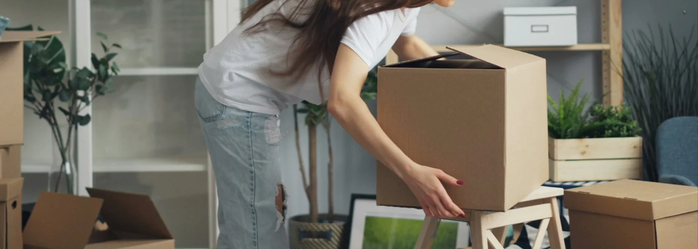

- C'est faisable : un déménagement urgent peut se gérer en 7 à 14 jours
- 3 priorités absolues : déménageur, démarches commune, nettoyage de fin de bail
- Délégation maximale : déménageur tout inclus, entreprise de nettoyage pour la fin de bail
- Ne pas paniquer : trier minimum, déménager d'abord, organiser ensuite
- Caution préservée : un nettoyage pro évite les retenues même en urgence
Pourquoi un déménagement urgent arrive
Un déménagement de dernière minute n'est jamais un choix. Il survient dans des situations précises qui demandent réactivité et organisation.
Les cas les plus fréquents :
- Mutation professionnelle rapide avec changement de canton ou de pays
- Séparation ou divorce nécessitant un départ rapide
- Vente immobilière où l'acheteur veut prendre possession vite
- Résiliation anticipée du bail par le propriétaire
- Opportunité de logement qui ne se représentera pas
- Travaux imprévus rendant le logement actuel inhabitable
Quelle que soit la cause, le plan d'action reste le même : déléguer le maximum, prioriser l'essentiel, ne pas chercher la perfection.
Pendant que votre camion roule, on s'occupe de votre fin de bail
58 sur 58 états des lieux validés
Voir le service fin de bail →Le plan d'action en 7 à 14 jours
Voici la chronologie réaliste d'un déménagement urgent réussi. Les délais peuvent se compresser si nécessaire.
| Jours | Actions prioritaires |
|---|---|
| J-14 à J-10 | Trouver déménageur, lancer démarches commune et services industriels |
| J-9 à J-5 | Trier au minimum, commander cartons, réserver nettoyage de fin de bail |
| J-4 à J-2 | Emballer pièce par pièce, réexpédition courrier La Poste |
| J-1 | Vider le frigo, démontage gros meubles, sacs essentiels à part |
| Jour J | Déménagement le matin, nettoyage de fin de bail le soir ou lendemain |
| J+1 à J+2 | État des lieux de sortie, remise des clés |
Les 3 priorités absolues en cas d'urgence
Quand on a peu de temps, il faut savoir où concentrer son énergie. Voici les 3 actions à lancer immédiatement.
Priorité 1 : trouver un déménageur disponible
C'est la première démarche, parce que les déménageurs sérieux ont des plannings chargés. En urgence, ciblez les entreprises qui :
- Répondent dans la journée à votre demande de devis
- Proposent un devis fixe sans avoir besoin de visite physique (photos suffisent)
- Couvrent votre zone (Suisse romande, interurbain, international)
- Incluent les démarches administratives dans leur prestation
Priorité 2 : lancer les démarches administratives essentielles
Vous ne pouvez pas tout faire, mais 3 démarches ne peuvent pas attendre :
- Annonce de départ à votre commune actuelle (en ligne ou en personne)
- Annonce d'arrivée à la nouvelle commune (à faire dans les 14 jours après l'arrivée)
- Réexpédition du courrier auprès de La Poste suisse
Le reste (banque, assurances, médecin, abonnements) peut être traité dans les jours qui suivent l'emménagement. Ne vous laissez pas paralyser par la liste complète.
Priorité 3 : organiser le nettoyage de fin de bail
C'est le point souvent oublié en urgence, et pourtant c'est lui qui détermine la restitution de votre caution. Une régie ne ferme pas les yeux sur un nettoyage bâclé sous prétexte d'urgence.
| Situation | Solution recommandée |
|---|---|
| Quelques jours seulement | Confier à une entreprise spécialisée |
| Une semaine disponible | Faire soi-même avec une checklist solide |
| Cas extrême (24-48h) | Entreprise pro avec garantie retour gratuit |

Comment trier en urgence sans perdre l'essentiel
Le tri est l'étape qui ralentit le plus un déménagement. En urgence, la règle est simple : ne triez pas, déplacez tout. Vous trierez plus tard, dans le calme.
Trois exceptions à ce principe :
- Documents importants : à rassembler dans une caisse identifiée (passeports, contrats, factures)
- Objets fragiles ou de valeur : à emballer soi-même avec soin
- Médicaments et kit santé : à garder à portée de main, jamais dans un carton
Pour tout le reste : étiquetez "à trier après" et emportez. Mieux vaut transporter 10% de trop que stresser pendant 5 jours pour gagner 30 minutes.
Le piège des prix gonflés en urgence
Quand vous appelez en urgence, certaines entreprises profitent de la situation pour gonfler les tarifs. Voici comment l'éviter.
Ce qu'il est normal de payer en plus
- Un léger supplément week-end ou jour férié (+10 à 20%)
- Un service "urgence" identifiable et chiffré clairement
- Un coût horaire légèrement supérieur si intervention immédiate
Ce qui devrait alerter
| Signal d'alerte | Risque |
|---|---|
| Devis téléphonique sans visite ni photos | Surcoûts le jour J |
| Tarif doublé "parce que c'est urgent" | Profiteur, fuyez |
| Refus de fournir le numéro IDE | Entreprise non déclarée |
| Pression pour payer en cash immédiatement | Très mauvais signe |
Comment coordonner déménagement et nettoyage en urgence
L'enchaînement optimal en cas d'urgence :
- Matin du jour J : déménageur charge le camion
- Après-midi du jour J : logement vidé, lancement du nettoyage de fin de bail
- Lendemain matin : finitions et contrôle qualité
- Lendemain après-midi : état des lieux avec la régie, remise des clés
Cet enchaînement n'est possible que si vous avez un seul interlocuteur ou des partenaires coordonnés. C'est précisément ce que permet la combinaison déménageur + entreprise de nettoyage travaillant ensemble.
FAQ – Déménagement urgent
Combien de temps minimum faut-il pour un déménagement urgent ?
En pratique, 7 jours est le minimum réaliste pour un déménagement urgent bien organisé. C'est faisable en 3-4 jours en cas d'urgence absolue, mais cela demande de déléguer presque entièrement (déménageur tout inclus, entreprise de nettoyage pour la fin de bail). Moins de 48h reste exceptionnel et plus coûteux.
Peut-on trouver un déménageur disponible en moins de 7 jours ?
Oui, les entreprises de déménagement professionnelles gardent souvent des créneaux pour les urgences. Le tarif peut être légèrement supérieur, mais reste raisonnable si vous évitez les profiteurs. Demandez 2 devis comparatifs même en situation pressée pour vérifier le prix juste.
Comment ne pas perdre sa caution avec un déménagement précipité ?
Confiez le nettoyage de fin de bail à une entreprise spécialisée avec garantie retour gratuit. C'est la seule solution qui sécurise vraiment la restitution de la caution en urgence. Un nettoyage fait à la hâte par soi-même mène presque toujours à des retenues, qui dépassent largement le coût d'une prestation pro.
Que faire des affaires qu'on n'a pas le temps de trier ?
Emportez tout dans des cartons étiquetés "à trier", et triez après emménagement dans le calme. En urgence, le tri est ce qui fait perdre le plus de temps pour le moindre bénéfice. Pour le débarras d'objets dont vous ne voulez vraiment plus, une entreprise spécialisée peut intervenir avant ou après le déménagement.
Les démarches administratives peuvent-elles attendre après l'emménagement ?
Certaines oui, d'autres non. À faire avant ou pendant : annonce de départ à la commune et services industriels. À faire dans les 14 jours après : annonce d'arrivée à la nouvelle commune (obligatoire en Suisse). Le reste (banque, assurances, abonnements) peut être traité progressivement dans les semaines qui suivent.
En résumé
Un déménagement urgent est gérable en 7 à 14 jours à condition de prioriser les bonnes actions et de déléguer le maximum. Trois actions ne peuvent pas attendre : trouver un déménageur disponible, lancer les démarches administratives essentielles, et organiser le nettoyage de fin de bail pour préserver la caution. Ne cherchez pas la perfection dans le tri : déplacez d'abord, triez ensuite. Une coordination directe entre déménageur et entreprise de nettoyage fait toute la différence dans la sérénité du jour J.